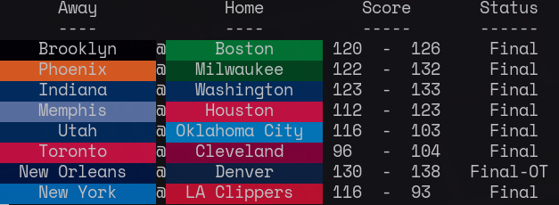

A command line program to view current NBA scores from the terminal. I initially tried to scrape the scores from espn, but ran into some trouble parsing their site's html. The scores etc weren't actually present there. I eventually landed on using NBC Sports

Figure 1. Example of what the program looks like as of March 7th 2022.
I added a date parameter at some point in January to get the dates from today, tomorrow, or
yesterday. To specify which day you want to see, use the -d flag.
There are three options:
t - Today (default)y - YesterdayT - TomorrowTo continuously run the program every 10 seconds and display output. This unfortunately causes a
flicker when clearing the terminal and running the program again. Another alternative is to use
watch, but this does not preserve the color of the team names.
while sleep 10; do clear; ./target/release/nba-scores-cli; done
I got the team RGB values found in src/team/team_colors.rs from this
site.
On 3/9/2022, I implemented a program loop that continuously runs the html fetching, parsing, and displaying every 10 seconds. This removes the need for the continuous display section described above.
The code now also now checks for user input to know when to exit the program. When the user presses
the q key, the program will clear the terminal and end (hopefully gracefully, but I haven't made
sure of that yet).